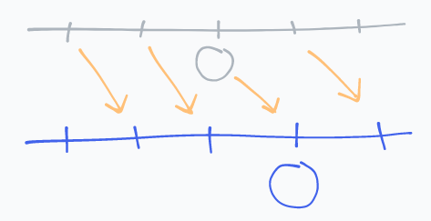
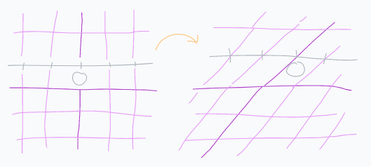

Homogeneous Coordinates
There's a lot to love about linear transforms. Matrices are easy to work and compute with. However, one apparent shortcoming of linear maps is that they can't express translations1. For instance, we can't do this with a linear transform:

Or can we?
One clever idea is to embed our original space in higher dimensional space, apply a linear transform to this space, and then project back into the original space.

This is great because we still get all of the benefits of linear transformations, and it only costs us one additional dimension (along with some really simple operations).
For instance, suppose we want to translate every vector in a 1-dimensional space by 1 unit in the positive direction (as shown in the original image). Let's first "lift" each vector into a 2-dimensional space (giving them each the same arbitrary, non-zero y-coordinate):
[x] -> [x, 1]What does a general 2-dimensional linear transformation do to this vector?
[a, b, * [x, = [a * x + b,
c, d] 1] c * x + d]We're going to "forget" about the y-coordinate when we project back into 1
dimension, so let's focus on the transformed x-coordinate.
Our original x-coordinate x is mapped to a * x + b; by adjusting b, we can
translate our vector!
For instance, the matrix
[1, 1,
0, 0]will shift all vectors by 1 unit in the positive direction.
The idea of operating on a vector in a higher dimensional space like this goes by the name "Homogenous Coordinates". There's much more to it than just this, but this usage shows up frequently when dealing with graphics.
For instance, the CSS transform: matrix(a, b, c, d, e, f) uses homogeneous
coordinates to represent the desired transformation.
This is because any linear transform necessarily maps 0 to 0:
If T is a linear map from a vector space U to a vector space V (both over
the same field F), then
T(0) = T(0 * 0)
^-------- The zero _field_ element
= 0 * T(0)
= 0